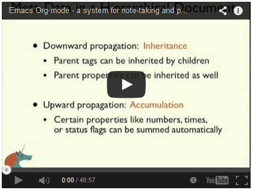

Taking Notes is a related topic.
6:00: I want you to take the challenge of __. The initial moves and behaviors that I am asking of you will feel initially awkward, unnatural, and maybe unneccessary! … One thing is “don't keep anything in your head for the rest of your life”
9:00: Johann Sebastian Bach didn't have email, but he did have 20 kids!
10:30: Don't manage your details and stuff in your life in your psyche…manage it in a system! (similar to a calendar) 11:00: If you're already in a mess, you have no freedom to make a creative mess.
https://www.youtube.com/watch?v=Qo7vUdKTlhk He's a very good tension-maker / communicator! Very similar to the life coaching people, although more focused on a single topic. It's only when the heat/pressure is up in your life that you really yearn for a good foundation. Lay it now!
10:54: It's not the information overload that gets you, nature is quite relaxing even though it is infinitely informative and complicated, and a blank room drives you crazy. It's meaning overload, imagine you are in a place where anything could eat you, bite you? You'd say, I'm not going out there!
15:42: Sure, a car has a distracting noise, but if there's a baby underneath the car that you need to save, it wouldn't distract you! Good analogy, but how to apply? Focus on your goal…?
18:14: You trust your calendar to take care of your schedule, why not make a system to keep track of your brain/mind?
25:00: For most people, the week before their vacation is the nicest time…because they are able to finally get everything under control.
44:00: It's a lot easier to handle surprises with 0 emails than 3,000 unprocessed emails.
Anxiety is caused by a lack of control?? (Christians would disagree…more like lack of God), organization, preparation, and action
Things can always be done better. But they need to get done!
Your ability to generate power is directly proportional to your ability to relax.
Water reacts appropriately to the force and mass of the input; then it returns to calm. It doesn't overreact or underreact.
Your mind is kind of dumb. It remembers things at the wrong time and perseverates on it because you might forget it again.
18: You don't manage priorities, you have them! 20: Many executives I have worked with during the day to clear the decks of their mundane “stuff” have spent the following evening having a stream of ideas and visions about their company and their future. This happens as an automatic consequence of unsticking their workflow.
21: There is usually an inverse proportion between how much something is on your mind and how much it's getting done.
23: The big problem is that your mind keeps reminding you of things when you can't do anything about them. It has no sense of past or future. That means that as soon as you tell yourself that you need to do something, and store it in your RAM, there's a part of you that thinks you should be doing that something all the time. Everything you've told yourself you ought to do, it thinks you should be doing right now. Frankly, as soon as you have two things to do stored in your RAM, you've generated personal failure, because you can't do them both at the same time. This produces an all-pervasive stress factor whose source can't be pinpointed.
I tend to not review my goals/todos as much as I'd like. I just pick the thing that is the most fun at the time, which is usually the least difficult
I feel like a lot of what pops into my head is not actionable (just for fun stuff, not that important)
org-mode seems really good for providing project links quickly and showing the next item to be done. It also supports re-ranking quickly, unlike paper
that you will want to organize by theme or topic or project name. Your “Projects” list will be merely an index. All of the details, plans, and supporting information that you may need as you work on your various projects should be contained in separate file folders, computer files, notebooks, or binders.
41: The way I look at it, the calendar should be sacred territory. If you write something there, it must get done that day or not at all.
Does he explain how to pick what to do? I think that's the 50,000 foot view
Need to do:
https://www.youtube.com/watch?v=oJTwQvgfgMM
Org-mode avoids separate systems for notes and planning. Combine the two!
Seems very similar to Engelbart Augment in collapsing things.
AUTO-COMPLETION OF TAGS AUTOMAGICALLY!?!?! Apparently emacs auto-completes everything too…cool!
Date entry: +2sun 2pm (2 sundays from now at 2pm)…dang
Use emacs for email as well. w00t. Filing things away is quite fast.
Org-mode can keep time that you've spent on a particular file or another part of emacs 
Org-Mode GTD: Nowadays, the lightweight dependency management built into the base org-mode is pretty much all I need. I just mark every parent item as requiring children to be completed in sequence, and configure the agenda only to show me tasks that aren't blocked. –Andrew Hyatt (see rest of article too for his improvements over GTD)
Seems pretty popular! Better than Omnifocus and has a mobile version too MobileOrg
Not so good for collaborating with other people, but I imagine one can always export a section.
Beginner Tutorial. Remap Caps Lock to Ctrl in Windows (natively). Make a binary key, then enter manually.
| Key Combo | Action |
|---|---|
| C-h i | Info Browser |
| ???? | Select Link (by name) |